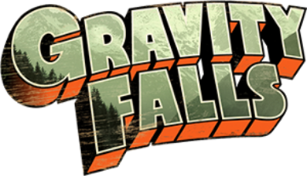

Gravity Falls

«Гравити Фолз» (англ. Gravity Falls) — американский анимационный телевизионный сериал, созданный Алексом Хиршем и компанией Disney Television Animation для телеканалов Disney Channel и Disney XD.
Мультсериал повествует о приключениях двойняшек — мальчика Диппера и девочки Мэйбл, которые проводят летние каникулы у двоюродного дедушки Стэна в вымышленном американском городке под названием Гравити Фолз.
Премьера состоялась в 2012 году на телеканале Disney Channel. Сериал набирал популярность. Премьера второго сезона состоялась на телеканале Disney в августе 2014 года. Также стало известно, что второй сезон станет последним. Финальная серия называлась: "Странногедон: Вернуть себе город" смотреть тут.
Персонажи